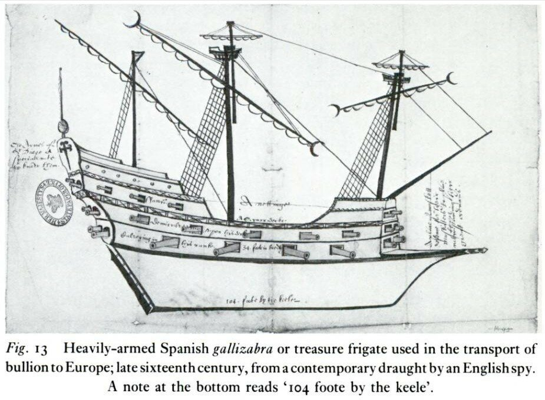

Впрочем, иногда название судна brigantine в английском флоте относили к малым плавсредствам, которые следовали на буксире за более крупным кораблем, как это было, например, в случае с Minion и Merlin, которые принимали участие во втором путешествии Джона Хокинса в 1564 году: за их кормой, как отмечается в документах, следовало по одной бригантине.
Прежде чем продолжить рассказ о малых гребных кораблях Англии, сделаем небольшое отступление, связанное с классификацией кораблей и судов той эпохи. В статье English Galleys in the Sixteenth Century (автор – E. R. Adair, опубликована в The English Historical Review, Vol. 35, No. 140 (Oct., 1920), приведен оригинальный метод распознавания гребных и парусных судов по их водоизмещению и численности экипажа. Приведен этот метод неспроста. Выше мы видели, что англичане очень вольно обращаются с термином galley: это могла быть и классическая галера средиземноморского типа, и парусный корабль, на котором весла использовались лишь как вспомогательное средство при заходе в порт или выходе из него. Порой там даже и уключин не было, а весла использовались как гребки. Так вот, Адэр считает, что
if a ship of over 50 tons is found fairly regularly described during this period as having a smaller number of men in its complement (mariners, gunners, and soldiers) than tons in its tonnage, it may be assumed, in default of strong evidence to the contrary, that it was not a rowing galley;
если для какого-нибудь корабля водоизмещением более 50 тонн достаточно регулярно приводится общая численность его экипажа (моряки, артиллеристы и солдаты), меньшая числа тонн в его водоизмещении, то, при отсутствии достаточно весомых аргументов против, можно считать, что это не гребная галера.
(EHR, p. 497)
Немного витиевато, но смысл достаточно ясен. Назовем этот критерий «правилом Адэра», на случай, если нам придется обращаться к нему в будущем.
Вернемся к малым галерам и скажем несколько слов об английских гребных фрегатах. Тему фрегатов мы в принципе уже подробно обсуждали. Применительно к английскому флоту эта тема имела некоторые особенности. Здесь термин фрегат в XVI веке имел значительно меньшее хождение, чем, скажем, на Средиземном море. Относили его, как правило, к самым малым из гребных судов, обычно беспалубных, с одной мачтой, вооруженной латинским парусом. На подобном фрегате было от 12 до 24 гребцов. Вместе с тем, фрегатами называли и испанские gallizabras, довольно крупные корабли (водоизмещением до 200 тонн), входившие в охрану «серебряных конвоев» из Америки в Испанию.

Иллюстрация из книги Geoffrey Vaughn Scammell, The World Encompassed: The First European Maritime Empires, C. 800-1650 University of California Press, 1981, стр. 343
Они входили в состав Flota de Indias и имели на борту до 20 орудий. В самом английском флоте в тот период фрегаты были довольно редким типом, это название относили в основном к небольшим иностранным кораблям, причем не важно, являлись ли они фрегатами на самом деле. Корбетт считает, что первые фрегаты ввел на английский флот Дрейк в 1575 году, появившись у побережья Ирландии на фрегате Falcon. Впрочем, может быть этот фрегат Дрейка был ничем иным, как пинасом под тем же названием, построенным в 1544 году (водоизмещение 80 тонн, экипаж 60-86 человек).
О пинасах у нас речь еще впереди.